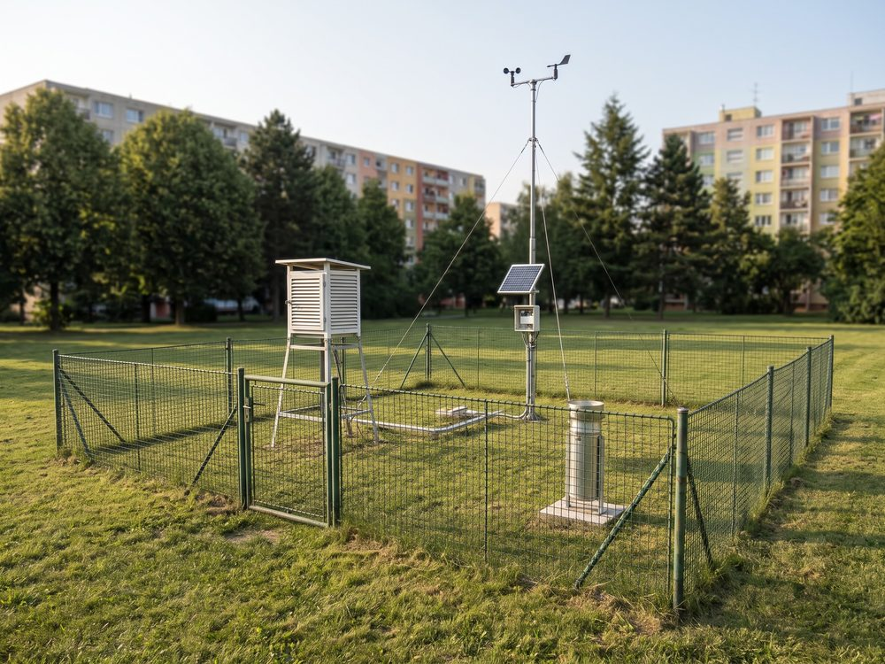
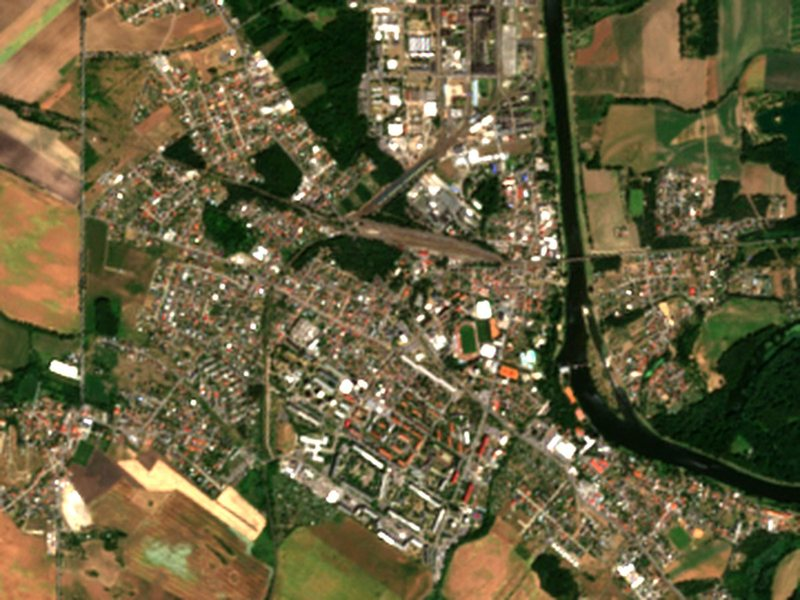
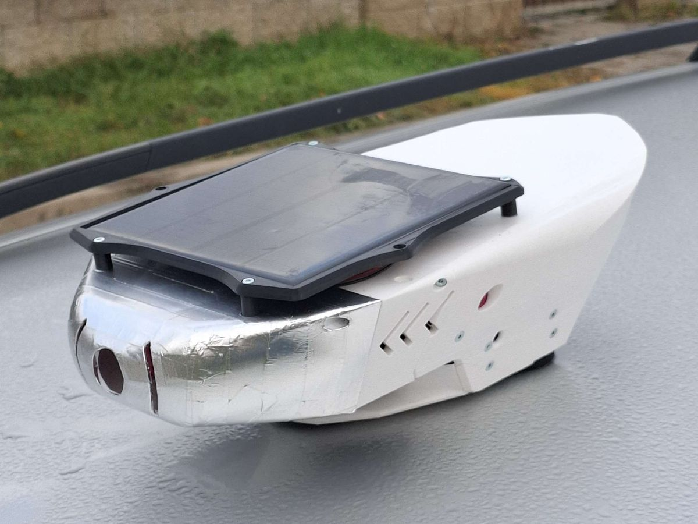

Přesné, ale izolované body
Měří pouze jedno konkrétní místo – zpravidla v parku či na okraji zástavby. Pokrytí celého města stacionární sítí by vyžadovalo stovky jednotek a milionové investice.
Proměníme stávající vozy MHD a technických služeb v mobilní monitorovací síť. Získejte přesná data o teplotních ostrovech a kvalitě ovzduší v ulicích vašeho města pro efektivní plánování městské zeleně, dotační projekty a adaptaci na změnu klimatu.
V ulicích Neratovic již probíhá testovací nasazení na komunální technice s více než 5 000 nasbíranými měřicími body. Mobilní sběr dat v praxi odhaluje mikroklimatické extrémy, které stacionární síť nemůže zachytit.
Rozdíl teploty vzduchu naměřený během jediné minuty mezi dvěma ulicemi vzdálenými 150 metrů – i na konci října (29. 10. 2026, 14:27). V letních vlnách veder tyto rozdíly přesahují 5 °C. Oficiální stacionární stanice přitom nevidí ani jednu z těchto ulic.

Výsadba každého vzrostlého stromu v uličním profilu i úpravy veřejných prostranství představují pro městský rozpočet statisícové investice. Aby opatření mířila tam, kde skutečně sníží tepelnou zátěž obyvatel, potřebuje město detailní přehled v úrovni jednotlivých ulic.

Měří pouze jedno konkrétní místo – zpravidla v parku či na okraji zástavby. Pokrytí celého města stacionární sítí by vyžadovalo stovky jednotek a milionové investice.

Družice snímají rozpálené střechy a asfalt (povrchovou teplotu), nikoliv vzduch, který obyvatelé v ulicích dýchají. Jsou navíc limitovány oblačností a pevnou dobou přeletu.

Mobilní stanice na městských vozech kontinuálně měří reálnou teplotu a kvalitu vzduchu přímo v ulicích. Propojením těchto měření s družicovými daty Copernicus dopočítáváme přesnou teplotní mapu i pro vnitrobloky, parky a pěší zóny.
Autonomní stanici připevníme na střechu vozu pomocí průmyslových magnetů s bezpečnostním jištěním během několika minut. Nezasahujeme do karoserie ani do elektroinstalace vozidla – záruka vozu zůstává plně zachována.
Vozy MHD, technických služeb či městské policie jezdí své standardní trasy. Stanice je napájena vlastním solárním panelem s chytrým řízením spotřeby, takže funguje celoročně a nevyžaduje žádnou obsluhu ze strany řidiče.
Město nekupuje ani neudržuje žádný hardware. Za fixní měsíční poplatek získáte přístup k webové mapě přehřívaných lokalit a standardizované GeoJSON API pro přímé napojení do stávajících městských portálů (např. Golemio).
Každá jednotka je osazena certifikovanými průmyslovými senzory. Naměřené hodnoty jsou automaticky kalibrovány vůči referenčním stanicím a zpřesněny vícepásmovou satelitní navigací pro spolehlivou lokalizaci i v husté městské zástavbě.

Jsme tým z ČVUT v Praze. Stanice navrhujeme, vyrábíme a provozujeme sami.

Jednatel, elektronika
Navrhuje úsporné desky stanice. Vedl pozemní komunikaci pro družici LASARsat.

Hardware a simulace
Vede studentský raketový tým. Vedl demonstrátor sledování čistoty vody z dat Copernicus.

Software a satelitní data
Stará se o backend a zpracování dat. Přes pět let vyvíjí hry.
Rádi vám ukážeme výstupy z probíhajícího pilotního provozu a navrhneme rozsah měření pro vaši obec – od krátkodobého zmapování tepelných ostrovů až po dlouhodobý celoroční monitoring.